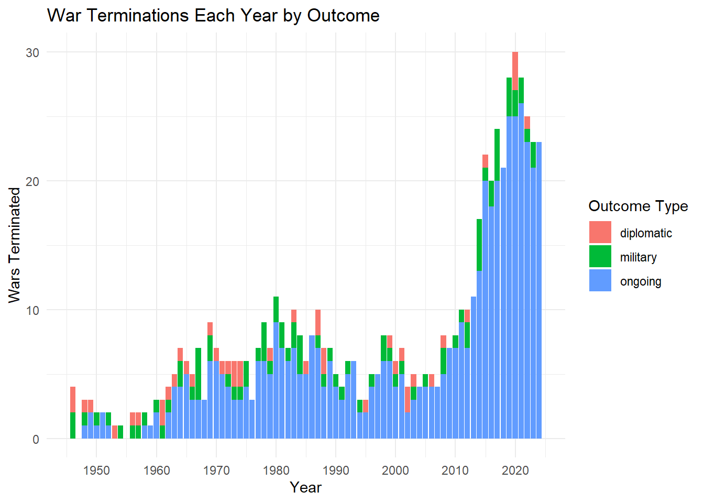
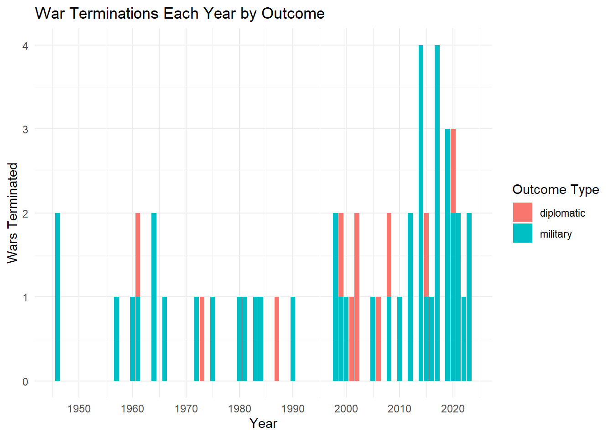
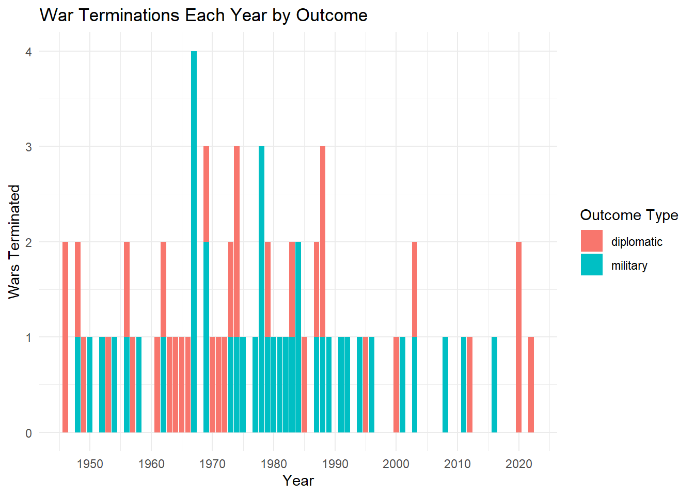
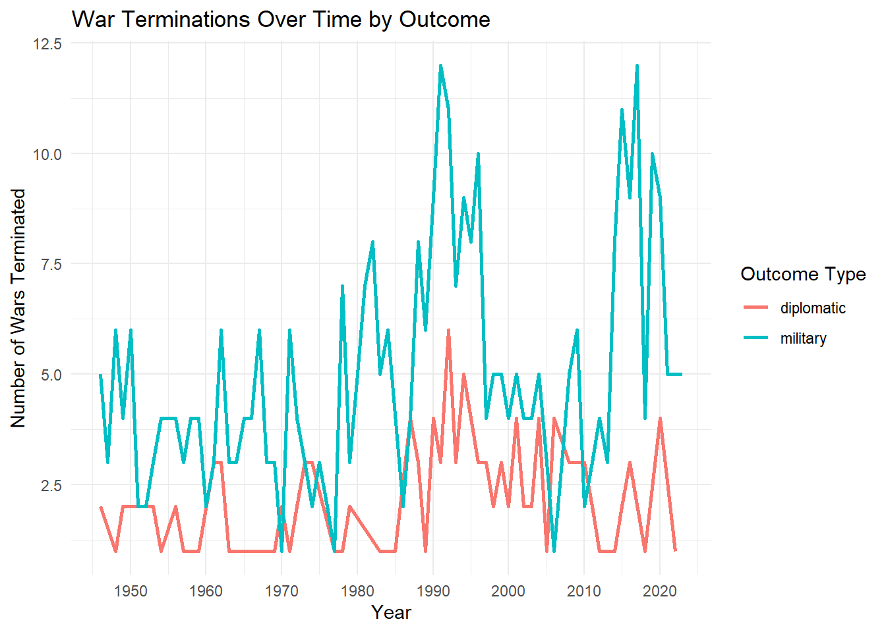

Rows: 2752 Columns: 36
── Column specification ────────────────────────────────────────────────────────
Delimiter: ","
chr (13): location, side_a, side_a_id, side_a_2nd, side_b, side_b_id, side_...
dbl (20): conflict_id, incompatibility, year, intensity_level, cumulative_i...
date (3): start_date, start_date2, c_ependdate
ℹ Use `spec()` to retrieve the full column specification for this data.
ℹ Specify the column types or set `show_col_types = FALSE` to quiet this message.
Rows: 2752 Columns: 28
── Column specification ────────────────────────────────────────────────────────
Delimiter: ","
chr (14): location, side_a, side_a_id, side_a_2nd, side_b, side_b_id, side_...
dbl (10): conflict_id, incompatibility, year, intensity_level, cumulative_i...
lgl (1): ep_end_prec
date (3): start_date, start_date2, ep_end_date
ℹ Use `spec()` to retrieve the full column specification for this data.
ℹ Specify the column types or set `show_col_types = FALSE` to quiet this message.
Variables of interest:
type of conflict2 The same conflict episode, or dyadic conflict episode, may include both years where neither side receive secondary support and years when they do. Type 2 thus combine the categories of internal armed conflict and internationalized armed conflict into the categories described below 1. Extrasystemic armed conflict. 2. Interstate armed conflict. 3. Intrastate armed conflict.
c outcome The coding of outcomes are based on the final year of activity and first year of non-activity. 1= Peace agreement 2= Ceasefire 3= Victory for Side A /Government Side 4= Victory for Side B /Non-State Side 5= Low activity (some, but less than 25 battle-deaths in subsequent year(s)) 6= Actor ceases to exist
# create decade variable and termination variabletermination_data <- termination_data %>%mutate(decade = (year %/%10) *10) termination_data <- termination_data %>%# Sort by ID and Year to ensure 'lead' picks the correct next rowarrange(conflict_id, year) %>%# Group by ID so we only compare years within the same conflictgroup_by(conflict_id) %>%# Create the duration (gap) variablemutate(duration =ifelse( c_epterm ==1, lead(year) - year, NA )) %>%ungroup()
termination_data <- termination_data %>%# Ensure data is ordered correctly by conflict and timearrange(conflict_id, year) %>%group_by(conflict_id) %>%mutate(# 1. Create conflict_resumes# Check if any subsequent year exists for this conflict_idconflict_resumes =ifelse( c_epterm ==1, as.integer(year <max(year)), NA ),# 2. Create peace_duration# Calculate years until the next recorded observation for this conflictpeace_duration =ifelse( c_epterm ==1& conflict_resumes ==1,lead(year) - year,NA ) ) %>%ungroup()termination_data <- termination_data %>%mutate(# 1. Create conflict_resumes# Check if any subsequent year exists for this conflict_idpeace_never_fails =ifelse( c_epterm ==1&is.na(peace_duration), as.integer(max(year)-year), NA ) )termination_data <- termination_data %>%mutate(# 1. Create conflict_resumes# Check if any subsequent year exists for this conflict_idpeace_fails_in_10 =ifelse( c_epterm ==1& (peace_duration>10|is.na(peace_duration)), 0, 1 ) )
library(ggplot2)
Warning: package 'ggplot2' was built under R version 4.5.3
ggplot(termination_data %>%filter(type_of_conflict %in%c(2, 4)), aes(x = year, fill = c_outcome_simple)) +geom_bar(position ="stack") +scale_x_continuous(breaks =seq(from =1900, to =2020, by =10) # Adjust start/end to your data ) +labs(title ="War Terminations Each Year by Outcome",x ="Year",y ="Wars Terminated",fill ="Outcome Type" ) +theme_minimal()

# Pre-calculate the counts per year and outcomedecade_data <- termination_data %>%filter(c_outcome_simple !='ongoing') %>%filter(type_of_conflict ==2| type_of_conflict ==4) %>%mutate(decade = (year %/%10) *10) # Create the line chartggplot(decade_data, aes(x = decade, fill = c_outcome_simple)) +geom_bar(position ="stack") +scale_x_continuous(breaks =seq(from =1900, to =2020, by =10)) +labs(title ="War Terminations Over Time by Outcome",x ="Year",y ="Number of Wars Terminated",color ="Outcome Type" ) +theme_minimal()
# Pre-calculate the counts per year and outcomedecade_data <- termination_data %>%filter(c_outcome_simple !='ongoing') %>%filter(type_of_conflict ==2 ) %>%mutate(decade = (year %/%10) *10)
# Create the line chartggplot(decade_data, aes(x = decade, fill = c_outcome_simple)) +geom_bar(position ="stack") +scale_x_continuous(breaks =seq(from =1900, to =2020, by =10)) +labs(# title = "War Terminations Over Time by Outcome",x ="Decade",y ="Number of Wars Terminated",color ="Outcome Type",fill ="Means of War End" ) +theme_minimal() +theme(# Move legend inside the plot area (top right)legend.position =c(0.98, 0.98),# Anchor the legend by its top-right corner so it doesn't bleed off the edgelegend.justification =c("right", "top"),# Optional: Add a background/border to ensure readability against the barslegend.background =element_rect(fill ="white", color ="black", linewidth =0.2),axis.title =element_text(size =11, color ="black"),axis.text =element_text(size =11, color ="black") )
# A tibble: 24 × 2
c_outcome_simple peace_duration
<chr> <dbl>
1 military 2
2 military 2
3 military 2
4 military 2
5 military 2
6 military 2
7 military 2
8 military 3
9 diplomatic 3
10 military 4
# ℹ 14 more rows
termination_data %>%filter(c_epterm ==1) %>%filter(c_outcome_simple !='ongoing') %>%filter(type_of_conflict ==2) %>%filter(conflict_resumes ==1) %>%group_by(c_outcome_simple, peace_fails_in_10) %>%summarize(count =n(),avg_peace =mean(peace_duration, na.rm =TRUE),.groups ="drop"# Keeps the output as a clean, ungrouped tibble )
termination_data %>%filter(c_epterm ==1) %>%filter(c_outcome_simple !='ongoing') %>%filter(type_of_conflict ==2) %>%group_by(c_outcome_simple) %>%summarize(count =n(),percent_fail =mean(peace_fails_in_10),.groups ="drop"# Keeps the output as a clean, ungrouped tibble )
# A tibble: 2 × 3
c_outcome_simple count percent_fail
<chr> <int> <dbl>
1 diplomatic 33 0.152
2 military 39 0.333
Outcomes of Interstate and Internationalized Wars
# Create the line chartggplot(termination_data %>%filter(c_outcome_simple !='ongoing') %>%filter(type_of_conflict %in%c(2,4)), aes(x = decade, fill = c_outcome_simple)) +geom_bar(position ="stack") +scale_x_continuous(breaks =seq(from =1900, to =2020, by =10)) +labs(title ="War Terminations Over Time by Outcome",x ="Year",y ="Number of Wars Terminated",color ="Outcome Type" ) +theme_minimal()
# A tibble: 2 × 2
c_outcome_simple total_n
<chr> <int>
1 diplomatic 44
2 military 83
Duration of peace
restart_analysis <- termination_data %>%filter(type_of_conflict %in%c(2,4)) %>%filter(c_outcome_simple %in%c("diplomatic", "military")) %>%filter(c_epterm ==1) %>%# Group by the type of terminationgroup_by(c_outcome_simple) %>%# Calculate the metricssummarize(total_terminations =n(),num_restarts =sum(!is.na(duration)),avg_peace_duration =mean(duration, na.rm =TRUE) )print(restart_analysis)
restart_analysis <- termination_data %>%filter(type_of_conflict %in%c(2,4)) %>%filter(decade >1999) %>%filter(c_outcome_simple %in%c("diplomatic", "military")) %>%filter(c_epterm ==1) %>%# Group by the type of terminationgroup_by(c_outcome_simple) %>%# Calculate the metricssummarize(total_terminations =n(),num_restarts =sum(!is.na(duration)),avg_peace_duration =mean(duration, na.rm =TRUE) )print(restart_analysis)
ggplot(termination_data %>%filter(c_outcome_simple !='ongoing') %>%filter(type_of_conflict ==4), aes(x = year, fill = c_outcome_simple)) +geom_bar(position ="stack") +scale_x_continuous(breaks =seq(from =1900, to =2020, by =10) # Adjust start/end to your data ) +labs(title ="War Terminations Each Year by Outcome",x ="Year",y ="Wars Terminated",fill ="Outcome Type" ) +theme_minimal()

ggplot(termination_data %>%filter(c_outcome_simple !='ongoing') %>%filter(type_of_conflict ==2), aes(x = year, fill = c_outcome_simple)) +geom_bar(position ="stack") +scale_x_continuous(breaks =seq(from =1900, to =2020, by =10) # Adjust start/end to your data ) +labs(title ="War Terminations Each Year by Outcome",x ="Year",y ="Wars Terminated",fill ="Outcome Type" ) +theme_minimal()

# Pre-calculate the counts per year and outcomeplot_data <- termination_data %>%filter(c_outcome_simple !='ongoing') %>%count(year, c_outcome_simple)# Create the line chart ggplot(plot_data, aes(x = year, y = n, color = c_outcome_simple)) +geom_line(linewidth =1) +scale_x_continuous(breaks =seq(from =1900, to =2020, by =10) ) +labs(title ="War Terminations Over Time by Outcome",x ="Year",y ="Number of Wars Terminated",color ="Outcome Type" ) +theme_minimal()

# Pre-calculate the counts per year and outcomeplot_data <- termination_data %>%filter(c_outcome_simple !='ongoing') %>%filter(type_of_conflict ==2) %>%count(year, c_outcome_simple)# Create the line chartggplot(plot_data, aes(x = year, y = n, color = c_outcome_simple)) +geom_line(linewidth =1) +scale_x_continuous(breaks =seq(from =1900, to =2020, by =10) ) +labs(title ="War Terminations Over Time by Outcome",x ="Year",y ="Number of Wars Terminated",color ="Outcome Type" ) +theme_minimal()